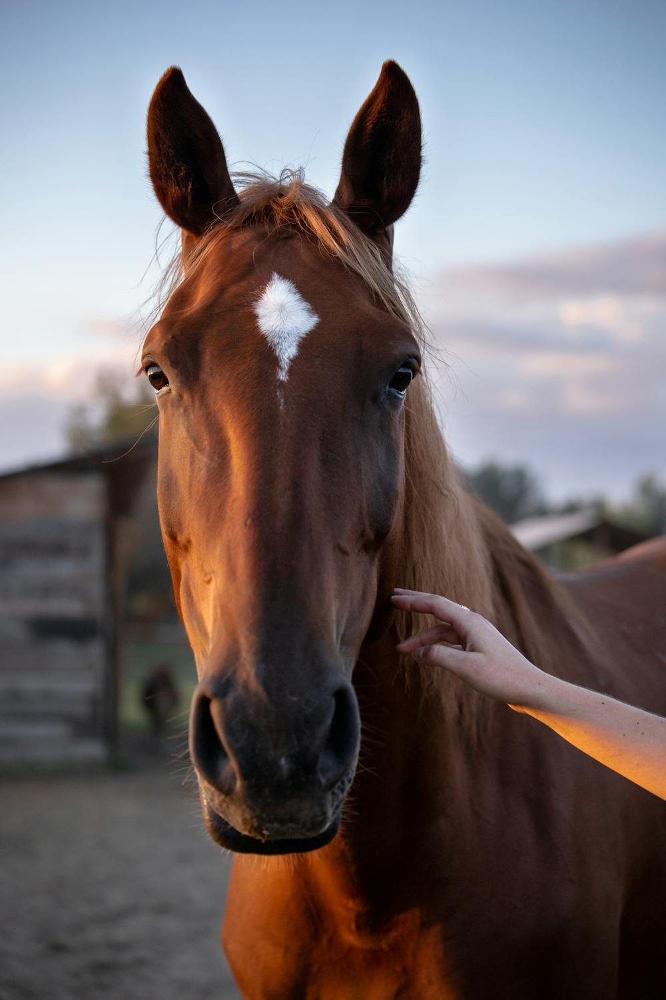
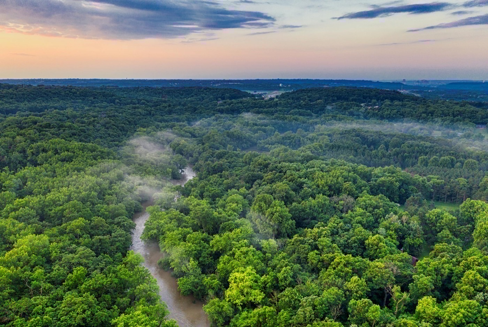
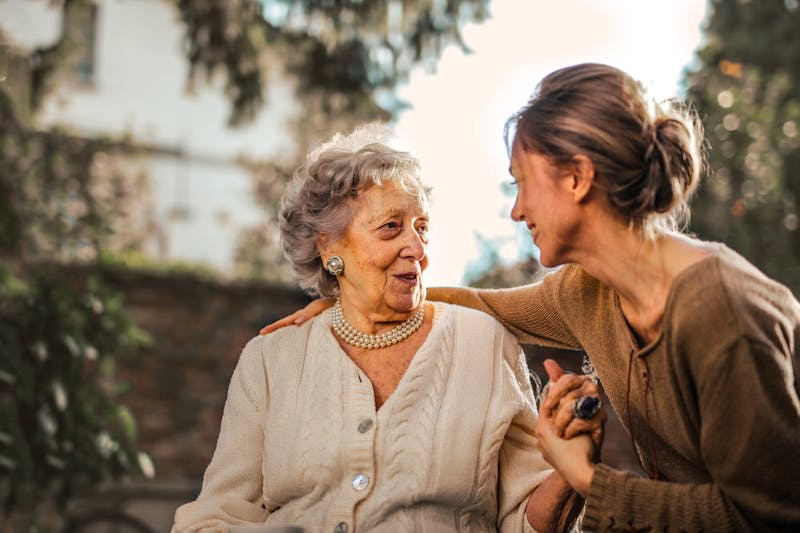

The Durand Clinic द्वारा प्रदत्त चिकित्सक-निर्देशित 32 दिवसीय कार्यक्रम — व्यक्तिगत रूप से डिज़ाइन किया गया, अश्व-सहायित मनोचिकित्सा सहित। अतिथि एक निजी एस्टेट पर पृथक रूप से निवास करते हैं।
प्रत्येक कार्यक्रम एक व्यापक स्वास्थ्य मूल्यांकन, व्यक्तिगत परिस्थिति और लक्ष्यों के आधार पर निर्मित किया जाता है। 32 दिन। कोई भी दो कार्यक्रम समान नहीं होते।
उन व्यक्तियों के लिए जिनका जुए, प्रौद्योगिकी, इंटरनेट, सोशल मीडिया, या गेमिंग से संबंध उनके जीवन पर हावी हो गया है। अधिकांश बाध्यकारी व्यवहार अंतर्निहित आघात, तनाव, या तंत्रिका तंत्र अनियमन की प्रतिक्रियाएँ हैं। The Durand Clinic मूल कारण का उपचार करता है, केवल व्यवहार का नहीं। 32 दिन एक असाधारण परिवेश में, एक चिकित्सक और मनोचिकित्सक के मार्गदर्शन में जो इसके पीछे के कारणों को समझते हैं।
कनाडा में वर्तमान में व्यवहारिक स्वास्थ्य के लिए कोई प्रीमियम आवासीय विकल्प उपलब्ध नहीं है। यह प्रथम है।
जटिल आघात, बाल्यकालीन प्रतिकूलता, तीव्र जीवन व्यवधान, या व्यावसायिक एक्सपोज़र को वहन करने वाले व्यक्तियों के लिए। अश्व-सहायित मनोचिकित्सा मूल चिकित्सा पद्धति है। घोड़े शिकार-पशु हैं जो मानव भावनाओं और तंत्रिका तंत्र की स्थितियों के प्रति असाधारण संवेदनशीलता रखते हैं — वे अतिथि जो कुछ वहन करता है उसे प्रतिबिंबित करते हैं, जिससे ऐसी गहन प्रगति संभव होती है जो केवल संवाद से प्राप्त नहीं हो सकती।
उच्च प्रदर्शन करने वाले व्यक्तियों के लिए जो सफलता की कीमत की भरपाई करने को तैयार हैं। व्यापक जैविक मूल्यांकन — एपिजेनेटिक मार्कर, संज्ञानात्मक कार्यप्रणाली, नींद वास्तुकला, चयापचय स्वास्थ्य, और जैविक आयु संकेतक। 32 दिवसीय व्यक्तिगत पुनर्स्थापन कार्यक्रम। अतिथि एक विस्तृत स्वास्थ्य रोडमैप और The Durand Clinic के डिजिटल स्वास्थ्य प्लेटफ़ॉर्म के माध्यम से निरंतर निगरानी के साथ प्रस्थान करते हैं।

घोड़े शिकार-पशु हैं — मानव भावनाओं, शारीरिक भाषा, और तंत्रिका तंत्र की स्थितियों के प्रति असाधारण रूप से संवेदनशील। वे निर्णय नहीं करते। वे प्रदर्शन नहीं करते। वे वास्तविक समय में अतिथि जो कुछ वहन करता है उसे प्रतिबिंबित करते हैं, जिससे ऐसी सफलताएँ प्राप्त होती हैं जो केवल संवाद से संभव नहीं हैं।
प्रकृति-आधारित अनुभवों, शारीरिक चिकित्साओं, और एक नैदानिक दल के साथ मिलकर जो संपूर्ण व्यक्ति के साथ कार्य करता है — न कि केवल प्रस्तुत व्यवहार के साथ — अश्व-सहायित मनोचिकित्सा The Durand Clinic द्वारा प्रदत्त प्रत्येक आवासीय कार्यक्रम की नींव है।

1980 के दशक में जापान में जन्मी और अब दशकों के नैदानिक अनुसंधान से समर्थित, शिनरिन-योकू — वन वातावरण में धीमे, निर्देशित विसर्जन की प्रथा — कोर्टिसोल को मापनीय रूप से कम करती है, रक्तचाप घटाती है, प्रतिरक्षा प्रणाली को सुदृढ़ करती है, और तंत्रिका तंत्र को शांत करती है।
UNESCO नायग्रा एस्कार्पमेंट के सहारे 100 एकड़ प्राचीन वन में, अतिथि अपने दैनिक कार्यक्रम के भाग के रूप में निर्देशित वन स्नान का अनुभव करते हैं। यह सैर नहीं है। यह व्यायाम नहीं है। यह एक सुविचारित, संवेदी अभ्यास है जो दीर्घकालिक तनाव द्वारा क्षरित किए गए को पुनर्स्थापित करने के लिए डिज़ाइन किया गया है — और यह ऐसे परिवेश में होता है जो 45 करोड़ वर्षों से ठीक यही कार्य कर रहा है।
अतिथि UNESCO-संरक्षित नायग्रा एस्कार्पमेंट पर निवास करते हैं — 45 करोड़ वर्ष पुरानी चट्टान संरचनाओं, नदी तट, प्राचीन वन, और जैविक कृषि भूमि के बीच। The Durand Clinic से पृथक एक निजी एस्टेट। ऐसा स्थान जहाँ शरीर और मन केवल वहाँ होने मात्र से शांत होने लगते हैं।
प्रत्येक कार्यक्रम एक सावधानीपूर्वक डिज़ाइन किए गए क्रम का पालन करता है। गहन कार्य आरंभ होने से पूर्व शरीर और मन को स्थिर होने का समय मिलता है।
The Durand Clinic की नैदानिक सुविधा में व्यापक स्वास्थ्य मूल्यांकन। घोड़ों और संपत्ति से परिचय। दैनिक लय की स्थापना। शरीर और मन एक ऐसे वातावरण में स्थिर होने लगते हैं जो ठीक इसी उद्देश्य के लिए डिज़ाइन किया गया है।
अश्व सत्र तीव्र होते हैं। संवाद कठिन विषयों की ओर जाता है। शारीरिक शक्ति भावनात्मक लचीलेपन के साथ-साथ बढ़ती है। शारीरिक चिकित्साएँ इस प्रक्रिया में शरीर का सहयोग करती हैं। सप्ताह 3 के पश्चात, निर्देशित बाहरी गतिविधियाँ आरंभ की जा सकती हैं।
यहाँ से जीवन कैसा दिखेगा? आगे के परिदृश्य का मानचित्रण। इसमें नेविगेट करने के लिए व्यावहारिक कौशल का निर्माण। The Durand Clinic का डिजिटल स्वास्थ्य प्लेटफ़ॉर्म निरंतर संपर्क के लिए कॉन्फ़िगर किया जाता है। एक सहयोगी रूप से निर्मित योजना।
7 दिनों के भीतर एक कॉल। चिकित्सा निदेशक के साथ मासिक जाँच। मनोचिकित्सक के साथ त्रैमासिक सत्र। Durand Health Intelligence Platform तक पाँच वर्षों की पहुँच। जब भी सहायक हो, लौटने का विकल्प।
यह कनाडा के किसी भी अन्य आवासीय कार्यक्रम से इसे भिन्न बनाता है।
प्रत्येक अतिथि को एक व्यापक दीर्घायु स्वास्थ्य मूल्यांकन प्राप्त होता है जिसमें उन्नत एपिजेनेटिक परीक्षण, जैविक आयु मार्कर, और आवश्यकतानुसार अतिरिक्त विशेष परीक्षण शामिल हैं। शारीरिक स्वास्थ्य लक्ष्य — शक्ति, नींद, चयापचय कार्यप्रणाली, जैविक आयु — व्यवहारिक और भावनात्मक कार्य के साथ-साथ सीधे 32 दिवसीय कार्यक्रम में निर्मित किए जाते हैं।
यही Durand आवासीय अनुभव को अद्वितीय बनाता है: यह शरीर और आत्मा को एक मानता है।
32 दिन आरंभ हैं। जो उसके बाद आता है वही इसे स्थायी बनाता है।
प्रत्येक अतिथि Durand Health Intelligence Platform तक पाँच वर्षों की पहुँच के साथ प्रस्थान करता है — एक सुरक्षित, AI-संचालित वातावरण जो आवासीय प्रवास समाप्त होने के बहुत बाद तक कार्य को जारी रखने के लिए डिज़ाइन किया गया है।
प्लेटफ़ॉर्म वियरेबल्स और स्वास्थ्य उपकरणों से जुड़ता है, नींद, पोषण, गतिविधि, और प्रमुख बायोमार्कर को वास्तविक समय में ट्रैक करता है। अतिथि स्वतंत्र रूप से अपने स्वास्थ्य लक्ष्यों का स्व-प्रबंधन कर सकते हैं, या वैकल्पिक नैदानिक दल सहायता — जाँच, कोचिंग, और एक निजी, एन्क्रिप्टेड चैनल के माध्यम से संवाद — जारी रख सकते हैं।
यह एक प्लेटफ़ॉर्म पर संपूर्ण स्वास्थ्य है — शारीरिक, व्यवहारिक, और भावनात्मक — दृश्यमान, मापनीय, और सप्ताहों नहीं, वर्षों तक समर्थित।
नींद गुणवत्ता, हृदय गति परिवर्तनशीलता, गतिविधि, और पुनर्प्राप्ति की निगरानी के लिए स्वास्थ्य वियरेबल्स से एकीकृत — वह डेटा जो अपॉइंटमेंट के बीच की वास्तविक कहानी बताता है।
नैदानिक दल के साथ निरंतर संवाद के लिए एक निजी, एन्क्रिप्टेड प्लेटफ़ॉर्म। प्रश्न पूछें, चिंताएँ साझा करें, प्रगति का अनुसरण करें — आपकी शर्तों पर, आपके समय अनुसार।
नींद, पोषण, और स्वास्थ्य लक्ष्यों के प्रबंधन के लिए प्लेटफ़ॉर्म का स्वतंत्र रूप से उपयोग करें — या अपने चिकित्सक और मनोचिकित्सक के साथ निरंतर नैदानिक सहायता का विकल्प चुनें।
प्रत्येक कार्यक्रम की देखरेख व्यवहारिक स्वास्थ्य और आघात में विशेषज्ञ चिकित्सक द्वारा की जाती है, जबकि एक पंजीकृत मनोचिकित्सक दैनिक नैदानिक कार्य की रूपरेखा तैयार करता है और उसका नेतृत्व करता है। दल प्रत्येक अतिथि के अनुसार निर्मित किया जाता है।
साप्ताहिक मूल्यांकन, नैदानिक पर्यवेक्षण, और निर्धारण अधिकार। व्यवहारिक स्वास्थ्य, आघात-सूचित देखभाल और चिकित्सा शिक्षा में विशेषज्ञता। The Durand Clinic के संपूर्ण नैदानिक ढाँचे से एकीकृत।
पंजीकृत मनोचिकित्सक जो व्यक्तिगत कार्यक्रमों की रूपरेखा तैयार करता है, अश्व-सहायित सत्रों का नेतृत्व करता है, और प्रत्येक अतिथि के प्रवास के दौरान बहु-विषयक दल का समन्वय करता है।
पंजीकृत परामर्शदाता • प्रकृति-आधारित अभ्यास में विशेषज्ञ व्यावसायिक चिकित्सक • अनुभवी परामर्शदाता • शिनरिन-योकू (जापानी वन स्नान) • मालिश चिकित्सा • पारंपरिक चीनी चिकित्सा • एक्यूपंक्चर • प्राकृतिक चिकित्सा • रिफ़्लेक्सोलॉजी • न्यूरोफीडबैक • व्यक्तिगत प्रशिक्षण • पोषण परामर्श • योग • कला चिकित्सा • सृजनात्मक चिकित्साएँ
हमारे कार्यक्रम उन व्यक्तियों और परिवारों की सेवा करते हैं जो विवेक, नैदानिक उत्कृष्टता, और एक ऐसे वातावरण को महत्व देते हैं जो उनके जीवन के प्रत्येक अन्य पहलू में उनकी अपेक्षा के मानक से मेल खाता हो। विश्व के सबसे उत्कृष्ट निजी क्लीनिकों पर विचार करने वालों के लिए — हम उसी स्तर की देखभाल प्रदान करते हैं, एक ऐसे परिवेश में जिसकी तुलना कोई यूरोपीय क्लीनिक नहीं कर सकता।

प्रमुखों और परिवार के सदस्यों के लिए विवेकपूर्ण, चिकित्सक-निर्देशित कार्यक्रम चाहने वाले फैमिली ऑफिस द्वारा विश्वसनीय। विद्यमान सलाहकार दलों के साथ समन्वित। पूर्ण गोपनीयता।
संगठनों, दलों, और परिवारों का भार वहन करने वाले नेताओं के लिए। जब तनाव, बर्नआउट, या बाध्यकारी व्यवहार आपकी उपलब्धियों को खतरे में डालें — एजेंसी और संतुलन पुनर्स्थापित करने के लिए डिज़ाइन किया गया एक निजी कार्यक्रम।
किसी प्रियजन की व्यवहारिक स्वास्थ्य चुनौतियों का नेविगेशन करने वाले परिवारों के लिए। मार्गदर्शन, नैदानिक समन्वय, और निरंतर संपर्क जो अतिथि से परे उन लोगों तक विस्तारित होता है जो सबसे अधिक महत्वपूर्ण हैं।
हम विश्व भर से अतिथियों का स्वागत करते हैं। आपके आगमन और प्रवास का प्रत्येक विवरण पूर्व में व्यवस्थित किया जाता है।
टोरंटो पियर्सन अंतर्राष्ट्रीय हवाई अड्डे से निजी स्थानांतरण। द्वार से द्वार तक 40 मिनट। आगमन समन्वय पूर्णतः हमारे दल द्वारा संभाला जाता है।
स्थल पर निजी शेफ। सभी आहार, सांस्कृतिक, और धार्मिक आवश्यकताओं की व्यवस्था। 32 दिवसीय प्रवास के दौरान प्रत्येक अतिथि की आवश्यकताओं और प्राथमिकताओं के अनुसार भोजन।
सभी चर्चाएँ NDA के अंतर्गत संचालित होती हैं। पूछताछ, आगमन, कार्यक्रम, और प्रवास का प्रत्येक पहलू पूर्ण विवेक और गोपनीयता सुरक्षा के साथ संभाला जाता है।
Durand® आजीवन आपके साथ®
कार्यक्रम समाप्त होता है। संपर्क नहीं।